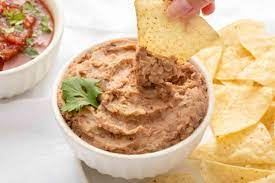

Refried Beans

How to make refried beans
Who knows why they called it refried beans? It doesn't not really matter because we are making it at home and not even frying it! All you need is a slow cooker for the best refried beans of your life.
Ingredients
- 1 lb Pinto Beans
- 1 Garlic clove
- 1/2 Yellow onion, diced
- 1 Jalepeno, decored*
*Leave seeds if you like the spice
Recipe
- Mix all ingredients in slow cooker with six cups water
- Cook on low for 8 hours or high for 5-6 hours
- Reserve extra liquid
- Mash the beans to your liking
- Add back liquid as needed and serve with shredded cheese topping